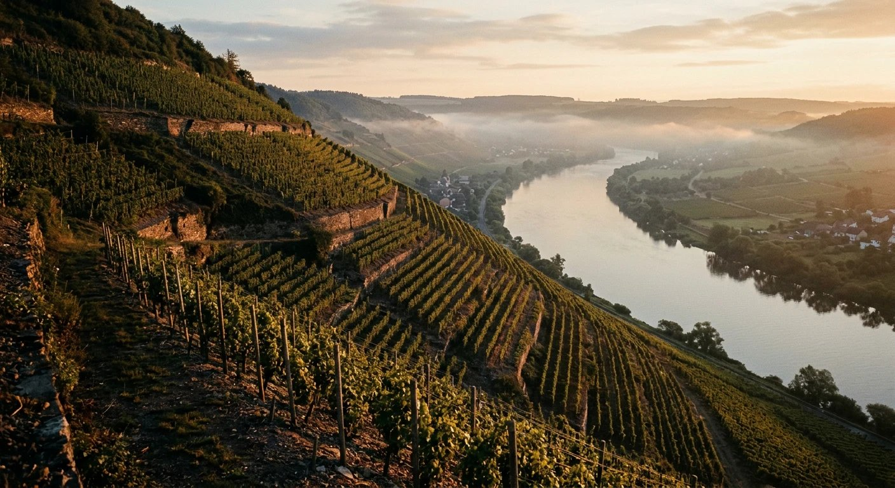

Galerie
Ce qu'on voit depuis la pente.
De la taille de janvier au dernier passage de novembre.





Photos provisoires de banque d'images libres — à remplacer par celles du domaine. Crédits en mentions.